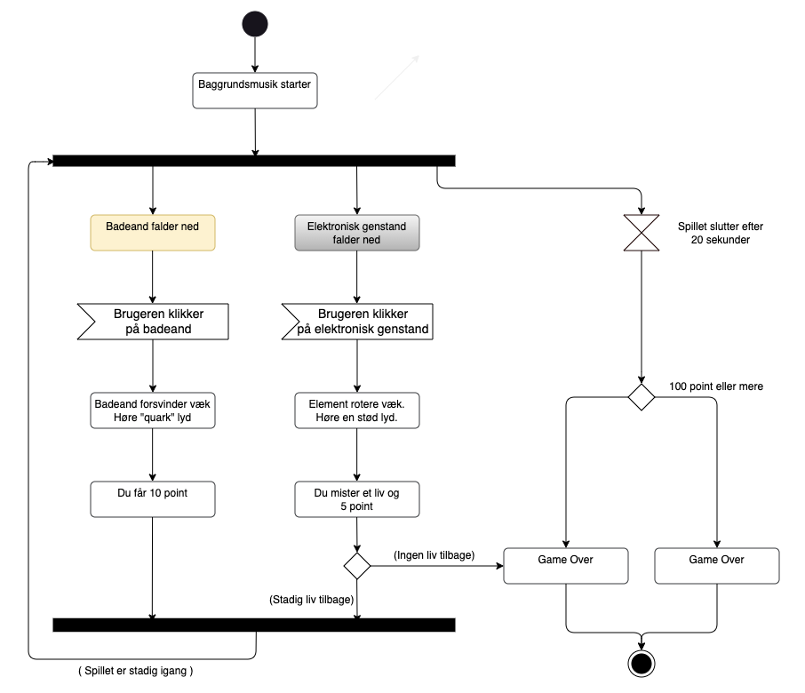
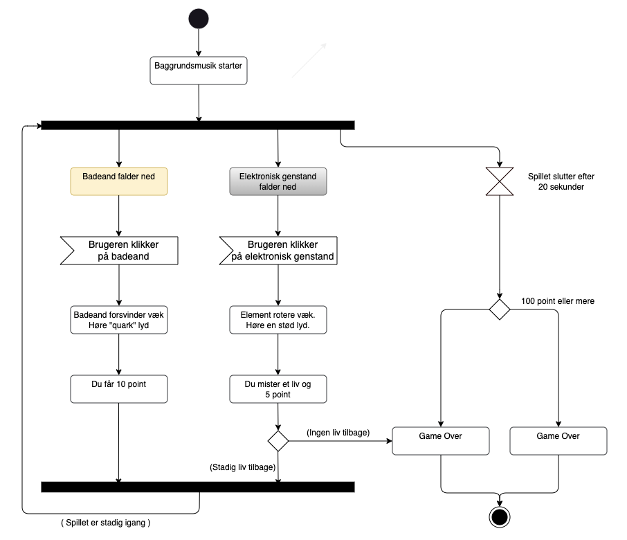

Aktivitetsdiagram
Her er et aktivitetsdiagram over min spilopbygning. Denne bruges til at tydeliggøre hvad selve ideen med spillet og des spilleregler er.
Her er et aktivitetsdiagram over min spilopbygning. Denne bruges til at tydeliggøre hvad selve ideen med spillet og des spilleregler er.

Her er et state machine diagram over mit spil.
Diagrammet beskriver spillets flow og handlinger gennem en state
machine, der viser de forskellige tilstande (states) og overgangene
mellem dem. Hver state repræsenterer et trin i spillet, fra start til
slut, hvor overgange styres af brugerens handlinger og spillets
interne logik. Når spillet loader, vises startskærmen. Spilleren kan
vælge at starte spillet, hvor point og liv nulstilles, og animationer
begynder. Badeænder og elektronik falder, og spilleren skal klikke på
badeænder for at få point, mens klik på elektronik resulterer i tab af
liv og point.
Hvis spilleren mister alle liv eller tiden løber ud, tjekkes
pointstatus:
Ved 100+ point vinder spilleren, ellers taber de. Afhængigt af
resultatet vises enten en “Win” eller “Game Over”-skærm, hvor
spilleren kan vælge at prøve igen.
Alt styres af animationer,
lyde og interaktioner i realtid.